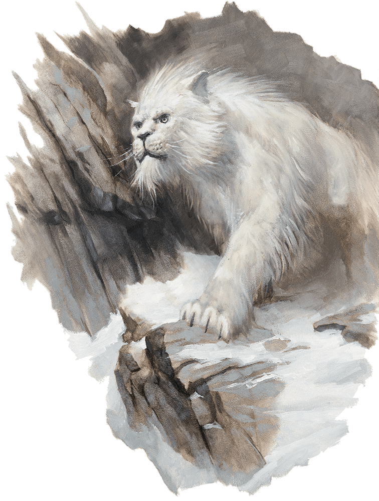

Monsters
Throughout our adventures, our group has encountered a multitude of trials. There have been a lot, and we mean a lot of creatures deadset on...well making sure we are dead. So please, enjoy this mini gallery of a few of the creatures we have encountered during our journey.


